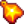

Das Forellenderby ist ein kleines Angelfestival, das am 20. und 21. Tag des Sommers stattfindet. Das Fest beginnt jeweils um 6:10 Uhr und endet um 2:00 Uhr. Es findet im Zundersaftwald am Fluss in der Nähe von Marnies Ranch statt. Während des Festivals kann der/die Spieler/in im Fluss fischen, um eine Regenbogenforelle zu fangen, welche dort den ganzen Tag über, unabhängig vom Wetter, zu fangen ist.
Jeder Fang einer Regenbogenforelle (mit der Ausnahme von Fängen aus dem Fischteich) hat eine 33% Chance, dem/der Spieler/in eine  Goldene Marke zu geben. Die Chance multipliziert sich mit der Anzahl der gleichzeitig gefangenen Regenbogenforellen. Bei 2 gleichzeitig gefangenen Fischen erhöht sich die Chance somit auf 66% und bei 3 gleichzeitig gefangenen Fischen auf 99%.[1] Es kann maximal eine Goldene Marke pro Fang erhalten werden, auch wenn mehrere Regenbogenforellen gefangen worden sind. Wenn eine Goldene Marke ohne Schatz erhalten wird, erhält der/die Spieler/in diese mit dem Fisch selbst. Ansonsten wird sie erhalten, wenn der/die Spieler/in einen Schatz fängt. Während Goldene Marken auch an anderen Orten mit Regenbogenforellen erhalten werden können, stellen Höfe mit Zundersaftwald-Fischen (Flussbett-, Bergspitzen-, Wald- und Meadowlands-Hof) eine Ausnahme dar. Regenbogenforellen können abseits des Flusses im Zundersaftwald nur mit den normalen Einschränkungen des jeweiligen Orts gefangen werden.
Goldene Marken können gegen Gewinne am Derby Stand getauscht werden.
Goldene Marken bleiben auch nach dem Festival erhalten und können für die folgenden Jahre aufgespart werden.
Im Gegensatz zu anderen Festivals sind die Häuser und Läden in Stardew Valley, während das Fest läuft, nicht geschlossen und auch die Zeit vergeht normal. Tiere müssen während des Festivals ebenfalls gefüttert werden; das Spiel sieht diese nicht automatisch als gefüttert an.
Wenn der/die Spieler/in mit dem Stand interagiert, kann diese/r entweder eine Goldene Marke gegen einen Preis eintauschen oder eine Erklärung des Festes bekommen.
Preise
Der/Die Spieler/in tauscht Goldene Marken einzeln gegen die verfügbaren Preise, auch wenn mehrere im Inventar vorhanden sind.
Der erste Preis, der erhalten wird, ist immer 1 Zelt-Bausatz. Danach kann der/die Spieler/in einen der 10 verfügbaren Preise erhalten.
Der erste Preis wird zufällig ausgewählt, danach werden die Preise in der unten stehenden Reihenfolge erhalten. Man erhält also einen Bucket-Hut, nachdem man drei Omni-Geoden erhalten hat.[2] Nachdem man alle 10 Preise erhalten hat, wiederholt sich die Liste in derselben Reihenfolge.
“Während dieser Veranstaltung haben Regenbogenforellen die Chance eine "Goldene Marke" zu tragen. Wenn ihr eine findet, gebt sie hier ab und gewinnt einen Preis!”
— Erklärung des Events im Spiel
“
“Sieht so aus, als hättest du keine Goldenen Marken... geh lieber angeln!”
— Dialog wenn der Spieler versucht,ohne Ticket einen Belohnung zu erhalten
“
“Sieht aus, als wäre deine Tasche voll. Mach lieber erst mal Platz.”
— Dialog wenn der Spieler versucht, einen Preis mit vollem Inventar einzufordern
Einführung
Ein paar Tage vor dem Fest wird ein Schild an dem Ort aufgestellt, wo während des Festes der Derby Stand steht.
“
“-----Forellenderby----- Dieses Wochenende, im Sommer vom 20. bis 21.: Beweis deine Süßwasserkenntnisse und gewinne Preise! (Hinweis: Persönliche Gegenstände, die in der Nähe dieses Schildes gefunden werden, werden ins Fundbüro gebracht)] gesendet)”
Charaktere
Willy ist beim Forellenderby anwesend, was seinen Laden für die Zeit des Festes nicht verfügbar macht. Er kann allerdings weiterhin beschenkt werden.
Andere unbekannten Charaktere von außerhalb des Sternentautals nahmen auch an dem Forellenderby teil. Unten ist eine Liste von möglichen Sätzen, falls mit ihnen interagiert wird.
Quotes
“
“Fisherman: Dafür bin ich den ganzen Weg von Grampleton hergekommen. Fisherman: Ich gehe nicht ohne eine Tasche voller Forellen!”
“
“Seemann: Ich glaube, ich bin ein bisschen overdressed für diese Veranstaltung.”
“
“Seemann: Natürlich... ein Typ taucht auf und trägt das gleiche Outfit wie ich. Wie peinlich!”
“
“Fischer: ... Entschuldigung, ich versuche den Frieden und die Ruhe zu genießen. Fischer: ... Fischer: ... Fischern: ... Fischer: Checkst du es nicht? Fischer: ... Fischer: ... Fischer: ... Fischer: Jemand wird gleich geschlagen und es sind nicht die Forellen. Fischer:...”
“
“Angelschwestern: Wir sind die berühmten Angelschwestern! Angelschwestern: Wir werden so viele Fische fangen wie wir wollen! Nah Nah Nah!”
“
“Angler: Glück gehabt? Die meisten Bisse, die ich bekomme, sind von den Mücken...”
“
“Forellenmann: Wo ich herkomme, nennt man mich 'Forellenmann'. Forellenmann: Ja, ich habe fünf Jahre lang gelernt, wie eine Forelle zu denken. Ziemlich einfach, eigentlich: Essen, Essen, Essen, Eier legen, ausruhen, mehr essen. Forellenmann: ich mag zufällig auch Essen. Allerdings bin ich nicht so gut im Eierlegen.”
“
“Fisherman: Trying to get away from the crowds? I had the same idea.”
“
“Profi-Angler: Ich weiß, es ist kein Wettbewerb, dennoch... wer die meisten Marken bekommt, hat für den Rest des Jahres das Recht zu prahlen! Profi-Angler: Ich werde im Winter zum Tintenfischfest zurückkehren... Das ist eine echte Herausforderung! Profi-Angler: Das Geheimnis, um Forellen zu fangen ist, das man ihnen etwas vorsetzt, das so lecker aussieht, dass sie gar nicht anders können, als anzubeißen...”
“
“Fischer: Ah, das ist das Leben. Nichts ist beschaulicher als ein Tag beim Forellenfischen.”
Tipps
Ohne Glück-Buffs, eine niedrige Fischen-Stufe und dem Angeln in Ufernähe, erhöht sich die Chance, Regenbogenforellen zu fangen. Die Übungsangel wird die Wahrscheinlichkeit ebenfalls erhöhen, obwohl sie nur nützlich ist, wenn Köder und Angelgerät nicht verfügbar sind.
Einen Herausforderung Köder zu benutzen und einen perfekten Fang zu erhalten, garantiert beinahe das Erhalten einer Goldenen Marke, da 3 Regenbogenforellen auf einmal gefangen werden. Der Spieler kann Korken-Fischköder oder Fischen-Buffs verwenden, um die Größe der Angelleiste zu erhöhen, was es einfacher macht, einen perfekten Fang zu erhalten.
Der Spieler kann außerdem einen Köderhersteller verwenden, um Regenbogenforellen Köder zu erhalten, was die Menge an Regenbogenforellen, die am Tag gefangen werden, erhöht. Der Köderhersteller kann auch zum Fest mitgenommen werden, um dort weiteren gezielten Köder herzustellen.
wenn perfekte Fänge bei jedem Versuch erreicht werden, erzielen diese, bei der Verwendung von Herausforderung Köder, im Durchschnitt mehr Goldmarken als jeder andere Köder.
Secret
Falls Mayonnaise gegessen wird, um Energie wiederherzustellen, gibt es einige Sätze, die die Angler in der Nähe des Spielers sagen werden:

 Krabbenreuse (1)
Krabbenreuse (1) Mysteriöse Kiste (3)
Mysteriöse Kiste (3) Diamant (1)
Diamant (1) Befestigte Forelle (1)
Befestigte Forelle (1) Deluxe Köder (20)
Deluxe Köder (20) Dreifacher Espresso (2)
Dreifacher Espresso (2) Qualitätssprinkler (1)
Qualitätssprinkler (1) Teleport-Totem: Hof (3)
Teleport-Totem: Hof (3) Omni-Geode (3)
Omni-Geode (3)